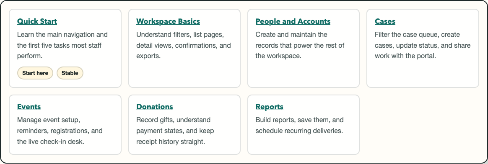

Staff Help Center
Use the stable staff workflows with confidence
This help center is the staff-facing guide set for Nonprofit Manager. Start here if you need a quick introduction, a task-based walkthrough, or a safe path around areas that are still changing. Use it for the stable workflows staff run most often: people, cases, volunteers, events, donations, reports, and day-to-day Workbench review. Treat dashboard layout editing and admin settings as changing areas until your local process is confirmed.
Guide library
Quick Start
Learn the main navigation and the first five tasks most staff perform.
Workspace Basics
Understand filters, list pages, detail views, confirmations, and exports.
People and Accounts
Create and maintain the records that power the rest of the workspace.
Cases
Filter the case queue, create cases, update status, and share work with the portal.
Events
Manage event setup, reminders, registrations, and the live check-in desk.
Donations
Record gifts, understand payment states, and keep receipt history straight.
Reports
Build reports, save them, and schedule recurring deliveries.
What this page is for
Use this landing page to choose the right staff guide before you train, troubleshoot, or document an internal process. It keeps the manual focused on the stable, high-traffic parts of the workspace: Workbench overview, people, cases, volunteers, events, donations, and reports.
This page also points out areas that are still changing so they do not get copied into standard operating procedures too early, especially dashboard customization and admin workspace flows that are still being refined.
Before you start
- Sign in with a staff account, not a portal account.
- Use a current desktop browser when you are learning or capturing screenshots.
- Know which workflow you are trying to complete: people, cases, events, donations, or reporting.
- Keep the Changing Areas appendix nearby if you need dashboard layout editing, admin settings, or another evolving screen.
Steps
- Start with the quick start guide. Use Quick Start if you are new to the staff workspace or training someone else.
- Review shared patterns once. Read Workspace Basics to understand filters, list behavior, and confirmation dialogs before you learn a module-specific guide.
- Jump to the workflow guide you need. Choose People and Accounts, Cases, Volunteers, Events, Donations, Dashboard and Analytics, or Reports. If the task depends on dashboard layout editing or admin settings, confirm the current local process in Changing Areas before treating it as stable training material.
- Use the FAQ for triage. When something looks wrong, check FAQ and Troubleshooting before escalating.
- Treat changing areas carefully. Use Changing Areas as a caution list, not as a process guide.

What happens next
After you use this page, you should have a clear path to the guide that matches your task. Most staff can move from this landing page to Quick Start, then into one module guide, without needing extra technical documentation.
Common mistakes
- Skipping Quick Start and going straight into a module without learning the navigation language.
- Using portal documentation for staff workflows.
- Treating the Changing Areas appendix as the official process of record.
- Capturing screenshots for internal training before confirming the screen is in a stable guide.
- Documenting dashboard layout editing or admin settings without checking Changing Areas first.
Related guides
Need help?
Start with your organization's admin or operations lead when you are unsure whether a workflow is stable, permission-related, or process-specific. If you escalate further, include the page you were on, the action you tried, the approximate time, and a screenshot label from this manual if one exists.